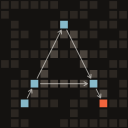
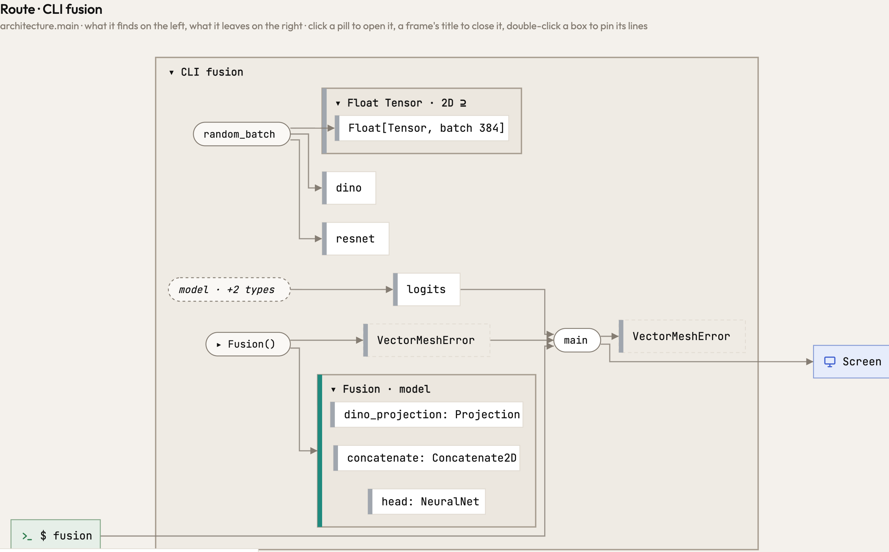
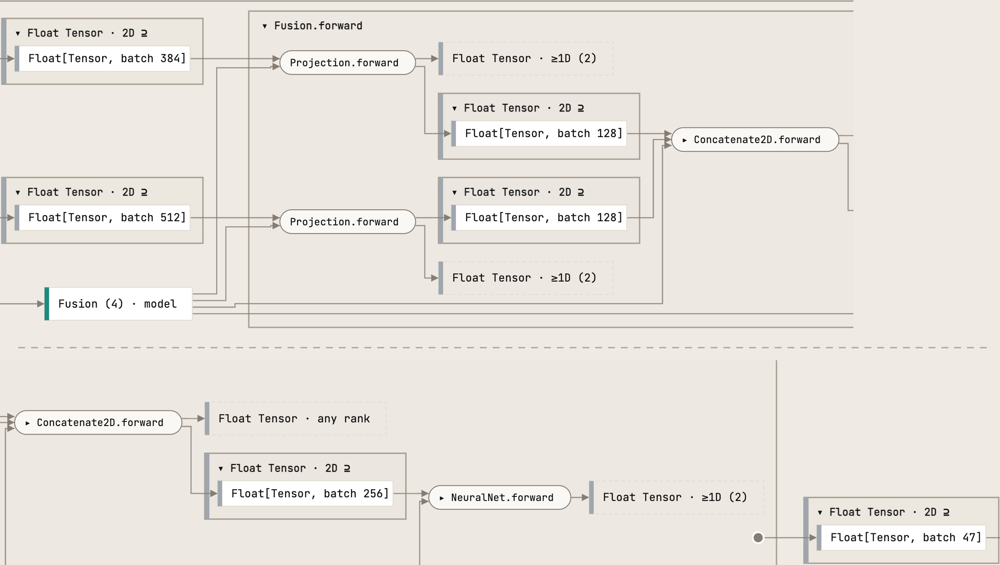
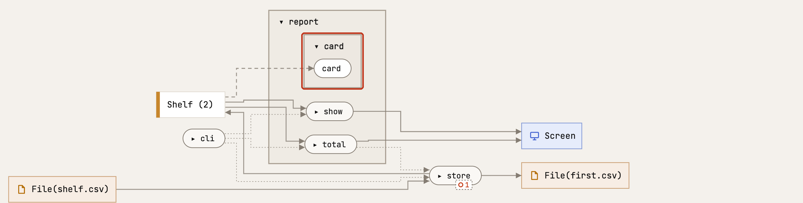
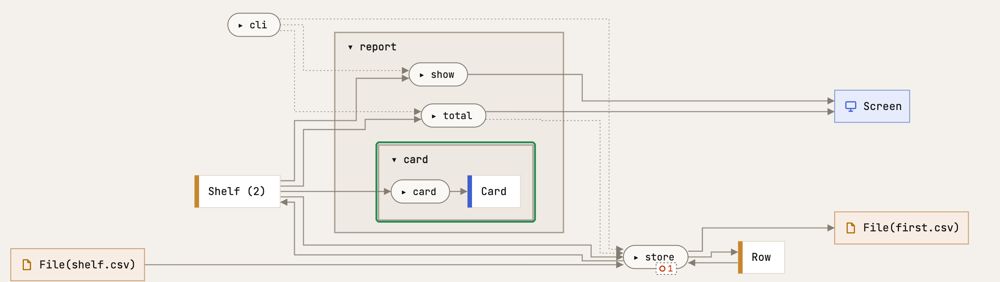
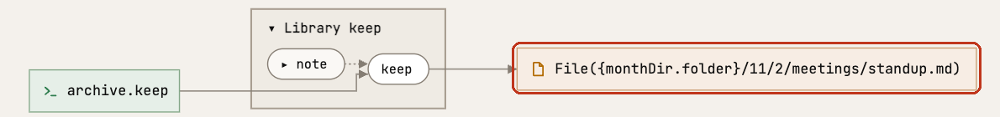
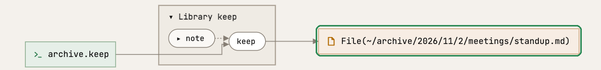
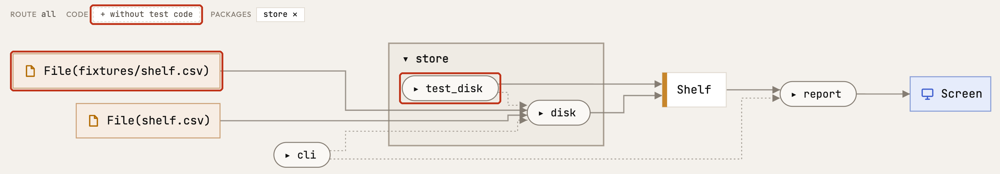
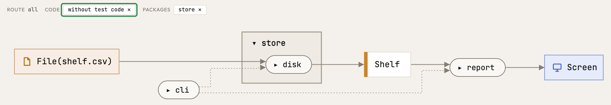

AtlasRelease 0.72.0 · 2026-11-06
What changed in Atlas 0.72.0
Atlas 0.72.0 draws a PyTorch model the way you write it: each submodule you call is a step, and each value between two steps keeps its jaxtyping shape, from the inputs to the logits. The overview draws what every function gives back, and leaves your tests out. A path built by helper functions is drawn whole.
Was drawn wrong, now drawn right
Each of these drew something your code does not do. In a picture of Atlas, a red outline is what only the release before draws, a green one what only this release draws.
A PyTorch model draws its forward pass as a chain of shapes
A model that calls its submodules, self.projection(x) and model(x), drew its forward pass as one dashed step to values without a shape. Now calling a module runs its forward, and every value between two steps keeps the shape its jaxtyping annotation declares. Printing or saving a model hands it on as a value and runs nothing.
In Atlas: the release before and this one
model(dino, resnet) is one dashed step to logits, and no value has a shape
Projection.forward to batch 128 each, joined, then batch 256 through NeuralNet.forward to batch 47 (the chain wraps at Concatenate2D.forward)
The overview draws what each function gives back
The packages view drew a type only where the code both made and took it. A function whose result no other function took, such as card(shelf) -> Card, or a model's forward that returns Float[Tensor, "*lead {self.out_size}"], drew what it took and no line to what it gave back. Now every type a function makes or takes is a box of the overview, in the smallest package that holds all its makers and takers.
In Atlas: the release before and this one
card takes the shelf and gives nothing
card gives a Card
A path built through helpers is the whole path
A path that each folder of it names with a helper function of its own was followed only so deep, so the archive's stand-up notes were written to {monthDir.folder}/11/2/meetings/standup.md, the folder three helpers down left as a hole. Now each function's return is read once, as a term of its parameters, and the notes are written to ~/archive/2026/11/2/meetings/standup.md, in Python, Rust and TypeScript alike. Reading Atlas itself got slightly faster for it (9.8 s to 9.2 s, cold).
{monthDir.folder}
~/archive/2026/11/2/meetings/standup.md
Smaller things that were drawn wrong
Studio, the page and the agent
The overview shows your program, not its tests
The overview drew all the code, tests included: a test's fixture file and the test's own types stood beside the files the program reads. It now draws the program alone, without Rust's #[test] and tests/, pytest's test_*.py and conftest.py, or a *.test.ts. The chip without test code ✕ above the picture says so, and one click on it draws the tests again.
test_disk and the fixture only it reads
without test code ×, and store reads shelf.csv alone
Speed
A large Rust program is read an eighth faster
A cold read of a 60,000-line Rust program takes 14.5 s, where it took 16.5 s, and a served page draws it as much sooner: each function's return is read once, as a term of its parameters (#396). Python and TypeScript programs read as fast as before, within the noise, with the same memory. Atlas's own test suite runs 8 % longer.
Within noise on every program: warm read, read again after a file no reader asks about, peak memory, release build, clean.
Every measure, per program
0.71.00.72.0
atlas-0.70.0
Rust · 117 files · 60,291 lines · 117 modules · 2,986 functions · 3,753 nodes · 15,637 edges · 3,700 library bodies
goad_toolkit
Python · 12 files · 4,382 lines · 12 modules · 169 functions · 276 nodes · 772 edges · 0 library bodies
vectormesh
Python · 35 files · 11,096 lines · 35 modules · 238 functions · 391 nodes · 966 edges · 0 library bodies
ordash
Rust · 1 file · 317 lines · 1 module · 5 functions · 19 nodes · 35 edges · 119 library bodies
A private Python + TypeScript program
Python + TypeScript · 279 files · 44,696 lines · 297 modules · 1,385 functions · 2,030 nodes · 5,873 edges · 0 library bodies
Atlas, built and tested
Every release since the series began, on its night
Each pair: d52a057 (0.71.0) and 799090b (0.72.0) built and measured interleaved on one runner, the median of 2 or 5 rounds each (the run). Over the releases: each release's night since the series began, on its night's runner (docs/reference/performance.md).